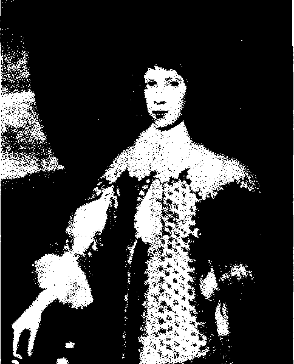
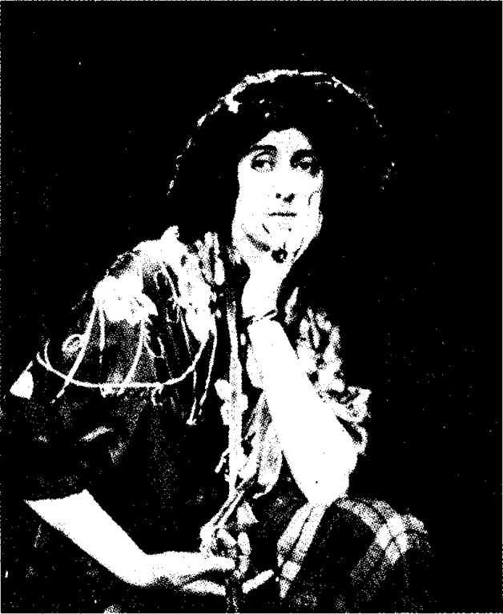

Bölüm 14
Orlando
To the Lighthouse’dan bir yıl sonra 1928’de yayınlanan Orlando, Virginia Woolf’un öteki romanlarına hiç mi hiç benzemeyen, hattâ İngiliz edebiyatında hiçbir başka kitaba benzemeyen, tümüyle özgün bir düşgücü ürünüdür. Eleştirmenler genellikle “a fantasy” (bir fantezi) diye nitelerler Orlando’yu. Yazarın kendisi ise “a biography” (bir yaşamöyküsü) adını verir kitabına. Ama bu bir şakadır elbette. Çünkü sözde yaşamöyküsünü yazdığı insan, Elizabeth Çağından 1928 yılına, yani Orlando’nun yayınlandığı tarihe kadar üç buçuk yüzyıldan fazla yaşar; kitap bittiği sırada hâlâ yaşamaktadır ve ancak otuz altı yaşındadır. The Death of the Moth’ta çıkan “The Art of Biography” (Yaşamöyküsü Yazmak Sanatı) adlı denemesinden anlaşıldığı gibi, Virginia Woolf birçok yaşamöyküsünü incelemişti ve Orlando’da bu türün bir çeşit parodisini yapmak ayrıca hoşuna gitti. Örneğin, ele aldığı insanın yaşamıyla ilgili belgeler sözde eksikti. Çözümleyemediği sorunlar vardı; kimi belgelere güvenilmezdi vb. Buna benzer sözlerle okuyucularından sözde özür dilemeyi ihmal etmedi. Gene yaşamöyküsü yazarlarının geleneklerine uyarak, çeşitli kişilere minnet borcunu belirtti ve teşekkürlerini sundu. Bunların arasında çoktan ölmüş eski dostları vardı, yani Daniel Defoe, Thomas Browne, Laurence Sterne, Walter Scott, Thomas de Quincey, Emily Bronte, Walter Pater gibi ünlü yazarlar. Henüz yaşamakta olan dostları da vardı. Örneğin, T.S. Eliot, yeğenleri Julian Bell ve Quentin Bell ve başkaları. Adını unuttuğu ve adresini yitirdiği bir Amerikalı baya ayrıca şükran duymaktaydı; çünkü bu bay, kitabının botaniğini, entemolojisini (yani böcekler bilimini), coğrafyasını ve kronolojisini özenle denetlemişti.
Güncesinden anlaşıldığı gibi, Virginia Woolf çok güç bir kitap olan To the Lighthouse’u bitirip, daha da güç olan The Waves ile uğraşmaya başlamadan önce, biraz dinlenmek, biraz dalga geçmek niyetindeydi:
“I think this will be great fun to write; and it will rest my head before starting the very serious mystical poetical work which I want to come next.”
(Bunu yazmanın çok eğlenceli olacağını sanıyorum. Bundan sonra yazmak istediğim çok ağırbaşlı, mistik ve şiirsel kitaba başlamadan önce, kafamı dinlendiririm.)
Gene güncesinden anlaşıldığı gibi, yepyeni yöntemler uygulayarak, özgün deneyler yaparak ve iyice zorlanarak peş peşe üç güç romanı, yani Jacob’s Room’u, Mrs. Dalloway’i ve To the Lighthouse’ı yazdıktan sonra, bir “kaçamak” (“escapede”) yapmak, “tabanları yağlayıp kaçmak” (“to kick up my heeels and be of!’) istiyordu. “I want fun, I want fantasy” (Eğlence istiyorum, fantezi istiyorum) diye yazıyordu güncesinde. Ama tasarladığı kitap, yalnız eğlenceli olmayacaktı. “Yarı gülen, yarı ağırbaşlı” (“half laughing, half serious”) bir kitap olacaktı ve gerçekle fantezi arasındaki dengeyi korumaya özen gösterilecekti. Güttüğü amaçlardan biri de, Orlando’nun öteki romanlarından farklı olarak, kolay anlaşılır olmasıydı. Güncesinde, bu kitabın çok açık seçik ve sade olacağı için, okuyucuların her şeyi kolayca anlayacaklarını söyler.
Orlando’nun Virginia Woolf’un bundan önceki romanlarından bir başka farkı da, bunlarda anlatılacak bir olay örgüsü, hattâ olay diyebileceğimiz hiçbir şey yokken, Orlando’nun gene yazarın kendi belirttiği gibi, Defoe’nun picaresque denilen türde serüven romanları kadar çarpıcı ve renkli olaylarla dolup taşmasıdır. Aşağı yukarı iki yüz sayfa tutan bu altı bölümlük kitapta neler olmaz ki! Orlando, daha on altı yaşındayken Kraliçe Elizabeth’in gözüne girer; bir Rus Prensesiyle çılgın bir aşk yaşar; Thames nehrinin üstünde öyle kalın bir buz tabakası oluşur ki, bir buzun üstünde eğlence yerleri ve Orlando ile Rus Prensesinin seviştiği köşkler dikilir; Orlando İstanbul’a elçi gönderilir; bir Çingene dansözle gizlice evlenip, üç oğul sahibi olur; İstanbul’dan Bursa’ya kaçıp, Çingenelerle yaşar bir süre; serüvenci bir denizciyle ikinci bir evlilik yapar, vb. Orlando’nun başından geçen olayların en çarpıcısı, kitabın ilk yarısında erkekken, günlerce süren gizemli bir uykudan sonra, ikinci yarısında kadın oluvermesidir.
Orlando’nun, Virginia Woolf’un bir ara âşık olduğu Vita Sackville-West’e ithaf edildiği ve Vita’nın kişiliğinden esinlendiği göz önünde tutulursa, bu cinsiyet değişimi son derece anlamlıdır. Çünkü yazarın yaşamından söz ederken belirttiğimiz gibi, Virginia Woolf’un gözünde Vita Sackville-West, kadınlıkla erkekliği kişiliğinde birleştiren androjen bir yaratıktı. Onda bir erkeğin gücü ve bir kadının zarifliği vardı. İşte bu yüzden Vita’nın oğlu Nigel Nicolson, Orlando’dan “the longest and most charming love-letter in literature” (edebiyat tarihinin en uzun ve en nefis aşk mektubu) diye söz eder. Virginia Woolf, Orlando’nun ilk baskısında, kitabın gerçek bir yaşamöyküsü olduğu şakasını sürdürmek için, Orlando’nun portrelerini verir. Bunlar, Vita Sackville-West’in fotoğraflarıdır aslında. Kitap yayınlanmadan önce, Vita ile yazar, bir haftalığına baş başa Fransa’ya gitmişlerdi. Vita o zaman okumuştu başkişisi olduğu kitabı. Virginia Woolf, kitabını yazarken, Vita’nın doğduğu Knole Şatosu’nda bir süre kalmıştı. Soylu Sackville-West ailesinin dört yüzyıldan beri oturdukları bu koskocaman ve görkemli malikâne, yazarı çok etkilemişti. Orlando’nun, bir yılın günleri kadar, yani 365 odası olan şatosu, Knole’un abartmalı bir kopyasıdır. Vita Sackville-West, yıllarca sonra, 1955’te The Listener’de yayınladığı bir makalede Virginia Woolf’un, Orlando’yu yazarken, kendisinden, ailesinden, Knole malikânesinden esinlendiğini ve eski ailelerle tarihsel malikânelerin Marcel Proust’u büyülediği gibi, Virginia Woolf’u da büyülediğini söyler. (Bunda Virginia Woolf’un snob’luğunun da bir payı var mı acaba diye hafif bir kuşkuya kapılırız.) Vita’nın kocası Harold Nicholson da, eşine bir mektubunda, onun Orlando’nun başkişisi olmasıyla gururlandığını, ikisi de öldükten sonra, Vita ile Knole’un Virginia Woolf’un kitabında sonsuza değin yaşayacağını söyler.
Orlando’nun ansızın cinsiyet değiştirmesi, yazarın hafife alınacak bir şakası değildir. Androjenlik, yani bir insanın hem kadın hem erkek olması, tam bir insan olabilmesi için şarttır Virginia Woolf’a bakılacak olursa. Daha önce de açıkladığımız gibi, yazar bir yıl sonra yayınladığı A Room of One’s Own’da bu görüşünü savunur. Virginia Woolf’a göre, kadınlarla erkekler, fizyolojik yapıları açısından farklıdırlar. Ama iki cinsiyet arasında, psikolojik açıdan kesin sınırlar yoktur gerçekte. Orlando’da der ki:
“Different though the sexes are, they intermix. In every human being a vaccilation from one sex to the other takes place, and often it is only the clothes that keep the ma’le or female likeness while underneath the sex is the very opposite of what it is above.”
(Cinsiyetler birbirilerinden farklı oldukları halde, birbirileriyle karışırlar. Her insan, bir cinsiyetle ötekisi arasında kararsızca sallanır. Çoğu zaman ancak giysiler, erkek ya da dişi görüntüsünü korumaktadır. Oysa bu giysilerin altındaki cinsiyet, görünen cinsiyetin tam tersi olabilir.)
İşin ilginç yanı şudur ki, Orlando erkek olduğu sürece, hiçbir androjenlik belirtisi göstermez. Kadınsı hiçbir yanı olmayan tam bir erkektir. Ancak kadın olduktan sonra, hem kadın hisseder kendini, hem de erkek. Aklına esince, erkek gibi yaşayabilmekten haz duyar. Erkek kılığına girip düellolar yapar, denizlere açılıp kaptanlık eder; bir kadını kaçırır ve o kadının kocası, kaçakları tâ Hollanda’ya kadar kovalar. Geceleri Londra sokaklarında erkek kılığında gezinir. Müşteri çekmek için, çok mutsuz görünen, hep ağlayıp sızlayan genç bir fahişenin odasına gider. Bu kıza, erkek olmadığını gösterince, sözde çok hüzünlü olan fahişe kahkahalar atarak gülmeye başlar. Başka genç fahişeleri de yakından tanır ve onların sohbetinden ayrıca hoşlanır. Kimi zaman aynı gün, hem erkek kılığında, hem kadın kılığında ortaya çıkar. Her iki cinsiyetten insanlarla, gelip geçici, ama çok keyifli aşk serüvenleri yaşar. Yaşamın hazlarını böylece arttırdığını söyler.

Woolf’un gözüyle “Orlando’nun Çocukluğu”,
IV. Dorset kontunun iki oğlunun resminden detay.
Androjenlik, Orlando’ya özgü bir durum değildir; romanın başka kişilerinde de görülür. Örneğin, Orlando erkekken ona âşık olan Rumanyalı Arşidüşes Harriet Griselda, aslında erkektir ve Orlando ile ilişki kurabilmek için kadın kılığına girmiştir. Orlando’nun yıldırım aşkıyla tutulduğu son sevgilisi Marmaduke Bonthrop Shelmerdine’in Orlando’nun kadınlığı konusunda kuşkuları vardır. Sahiden kadın mı olduğunu sorar ona. Orlando ise, sevgilisinin aslında erkek değil, kadın olduğunu düşünür. Zaten bu sevgililer için, Orlando’nun kadın, kısaca Shel dediği sevgilisinin erkek olması önemli değildir. Onların açısından, bir kadının tüm davranışlarında bir erkek kadar güçlü ve özgür; bir erkeğin de bir kadın kadar duyarlı ve ince olabilmesidir asıl önemli olan.
Orlando, erkekken kadın olmakla kalmaz sadece. Tâ Elizabeth Çağından 1928 yılına kadar, yaşadığı yüzyıllara uyarak, çeşitli değişimlere uğrar. Onda hiç değişmeyen tek şey şairliğidir. Virginia Woolf, başkişisinin edebiyat merakını, çocukluğunda başlayan bir hastalık olarak ele alır. Bu hastalığın ilk belirtisi, okuma tutkusudur. Hasta gece gündüz okur. Hiç olmazsa geceleyin okumasın diye mumları elinden alırlar. Çocuk, bahçeden topladığı ateş böceklerini bir cam kabın içine koyarak, onların ışığında okur. Bu sürekli okumanın doğal sonucu da, hastanın yazı yazmak illetine tutulmasıdır. Virginia Woolf, sevimli abartmalar yaparak, Orlando’nun daha yirmi beşine basmadan, kimi şiirle kimi düzyazıyla kırk yedi tiyatro oyunu, birkaç sone dizisi; bir kısmı İngilizce, bir kısmı Fransızca, bir kısmı İtalyanca yığınla şiir yazdığını söyler. Bu şiirlerin hepsi çok uzun ve çok coşkuludur. Ne var ki, Orlando yazdıklarını yayınlamaz. Çünkü Elizabeth Çağı görgü kurallarına göre, soylu bir kişinin (Orlando XI. yüzyılda Norman istilâsı sırasında İngiltere’ye yerleşen çok soylu bir aileden gelir) edebiyatla uğraşması ve şiir yazması ne denli doğruysa, yazdıklarını yayınlamaya kalkması da o denli yanlıştır. Hattâ yalnız yanlış değil, fena halde ayıplanacak bir davranıştır.
Orlando on altı yaşındayken, Kraliçe Elizabeth’in görkemli şatosuna konuk geldiği sırada, uşak odalarından birinde, bir masaya oturmuş, düşünüp düşünüp bir şeyler yazan, biraz topluca, çok kılıksız bir adam görür. Bu adamın Shakespeare olduğunu anlar. Onunla konuşmak ister, cesaret edemez. Ama o adamın “son derece şaşırtıcı” (“most amazing”) gözlerini hiçbir zaman unutamaz. Onun gibi büyük bir şair olmak hırsıyla yanıp tutuşur ömrü boyunca.
Orlando, en soylu duyguları gözler önüne seren, aynı zamanda insanda dehşet uyandıran tragedyalarını ve şiirlerini yazarken, bütün sanatçıların çektikleri korkunç acıları çeker. Yazar yazar, sonra yazdıklarını yırtar. Kendini çok yetenekli sanıp, sevinçten uçar; sonra da bayağının bayağısı sayıp perişan olur. Büyük bir dâhi mi, yoksa iflâh olmaz bir budala mı olduğuna karar veremez. Şair olmanın, ataları gibi savaş alanlarında kılıç sallayarak kahramanlık etmekten ne denli daha güç bir iş olduğunu anlar bu arada.
Orlando, daha sonraları da sözünü edeceğimiz yazar Nick Greene’i şatosunda konuk eder. Ama bu adam, Londra’ya geri döner dönmez, Orlando’yu da, Orlando’nun tragedyalarıyla şiirlerini de rezil eden bir taşlama yayınlar. Artık otuz yaşında olan Orlando, bu taşlamayı okuyunca büyük bir şok geçirir; sayısı elli yediye çıkan tragedyalarının hepsini ve şiirlerini yakar. Ancak “The Oak Tree” (Meşe Ağacı) adlı şiirine kıyamaz; yüzyıllar boyunca bu şiirin üstündeki çalışmalarını sürdürür. Bu arada karar verir: Bundan böyle kendine ün sağlamak hırsından sıyrılacak; Norman soyundan çok daha yüce bir soydan, yazarların kutsal soyundan geldiğinin bilincine varacak, başkalarının hoşuna gitmek için değil, yalnız kendisi için, yalnız şiire taptığı için “The Oak Tree”yi yazacaktır. Böylece malikânesinin bir tepesindeki o meşe ağacını ölümsüzlüğe kavuşturacaktır. Orlando, Elizabeth Çağında yazmaya başladığı bu şiiri Victoria Çağında bitirir ancak. Bitirince de, her zaman göğsünde, yüreğinin üstünde taşıdığı el yazması, canlıymış gibi çırpınmaya başlar. Orlando anlar ki, o şiir mutlaka okunmak istiyor; eğer okunmazsa, göğsünün üstünde ölüverecek. Sir Nicholas Greene, şiirin hemen yayınlanmasını sağlar. Hızla yedi baskı yapan şiire iki yüz guinea’lik bir ödül de verilir. Sir Nicholas Greene, bir nutuk atarak, ödül parasını Orlando’ya sunar.
Kimi eleştirmenlere göre, Orlando, İngiliz edebiyatının geçirdiği dönemleri simgeleyen bir kişidir: Elizabeth Çağında, coşkulu, duygusal ve serüven meraklısıdır; Jacobean Çağda, kasvetli ve ölüme tutkundur; Kraliçe Anne döneminde, neşelidir ve taşlama türüne merak duyar. Sonra, romantizm dönemine uyarak, yeniden coşkulu; dağlara, ormanlara, denizlere büyük bir aşk içindedir. Victoria Çağında bir hayli burjuvalaşır; evlenip çoluk çocuk sahibi olmak gereksinimi duyar; son derece tatsız şiirler yazmaya başlar. Ama “The Oak Tree” şiirini sürekli düzelten Orlando’nun aklından geçenlere bakarsak, bütün bu değişimler içinde, Orlando’nun şiirinin de, kendisinin de pek değişmediğini anlarız. Tıpkı İngiliz edebiyatı temel özelliklerini koruduğu gibi, o da öz kişiliğini her zaman korumuş; örneğin, düşünceye her zaman saygı duymuş, doğayı her zaman sevmiştir.
Orlando’nun belirli bir tarihten sonra cinsiyet değiştirip kadın olmasını bile, İngiliz edebiyatının değişik dönemlerini temsil etmesine bağlayanlar vardır. Çünkü XVI. ve XVII. yüzyıllarda kadınların hiç yeri yoktu edebiyatta. Aralarında gizlice yazanlar vardı belki; ama yazdıklarını yayınlamaya kalkmak, akıllarının kenarından bile geçmezdi. Kadınlar, ancak XVIII. yüzyılda edebiyatta kendilerine bir yer edinmeye başladılar. Romancı kadınlar yetişti; ama uzun zaman şair kadın gene de yoktu. Belki bu yüzdendir ki, Or-lando, kadın olduktan sonra da “The Oak Tree” şiirini, göğsünün üstünde taşımakla birlikte, kadından şair çıkmadığına göre, acaba şiirimi yazmaya devam edebilecek miyim kaygısına kapılır.
Orlando’nun altı bölümünün kapsadığı yıllar aşağı yukarı şöyle sıralanabilir: Birinci bölüm 1585-1625, ikinci bölüm 1625-1680, üçüncü bölüm 1680-1702, dördüncü bölüm 1702-1800, beşinci bölüm 1800-1900 ve altıncı bölüm 1900-1928. Bu zaman dilimleri arasında Virginia Woolf’un en çok Elizabeth Çağını sevdiği hiç kuşku götürmez. Bu çağın, kendi yaşadığı XX. yüzyıldan ne denli daha güzel ve daha renkli olduğunu coşkuyla anlatır:
“The age was the Elizabethan. Their morals were not ours; nor their poets; nor their climate; nor their vegetables even. Everything was different. The weather itself, the heat and cold of summer and winter, was, we may believe, of another temper altogether... Sunsets were redder and more intense; dawns were whiter and more auroreal... The rain fell vehemently or not at all. The sun blazed or there was darkness... Violence was all. The flowers bloomed and faded. The sun rose and sank. The lover loved and went... For the day was brief and the day was all.”
(Elizabeth Çağıydı bıı. Onların ahlâk kavramı, bizim ahlâk kavramımız değildi; şairleri, bizim şairlerimiz değildi; iklimleri bizim iklimimiz değildi; hattâ sebzeleri bile bizim sebzelerimiz değildi. Her şey başkaydı. Hava bile, yazın sıcağının, kışın soğuğunun bambaşka olduğuna inanabiliriz... Gün batışları daha kızıl ve daha yoğundu; şafaklar daha beyaz ve daha şafağımsıydı... Yağmur ya şiddetle yağar ya da hiç yağmazdı. Güneş ya pırıl pırıl parlar ya da karanlık olurdu... Şiddet her şeye egemendi. Çiçekler açar ve solardı. Âşıklar sever ve giderdi... Çünkü gün kısaydı ve o günden başka bir şey yoktu.)
Orlando, bu bambaşka çağın eşsiz bir çiçeğidir. Gençtir, yakışıklıdır, soyludur, oyun yazarıdır, şairdir, Kraliçe Elizabeth’in gözdesidir. Yaşlı Kraliçe şatosuna konuk geldiği sırada, Orlando, onun önünde diz çöküp, o akşam verilecek görkemli şölenden önce ellerini yıkaması için, Kraliçeye bir kâse gülsuyu sunar. Elizabeth, bu on altı yaşında gencin, son derece biçimli bedenini, kapkara saçlarını, “sırılsıklam menekşeleri” (“drenched violets”) andıran gözlerini görür görmez, ona bayılır.
Orlando on sekiz yaşındayken, Londra’ya Saraya gider. Artık ölmek üzere olan Kraliçe, ona dizbağı nişanını, ikinci bir malikâne ve bol bol toprak bağışlar. Gelgelelim, aralarında geçen oldukça güldürücü bir sahneden anlaşıldığı gibi, Elizabeth’in sevgi gösterilerine katlanmak hiç de kolay değildir. Örneğin, artık ayakta duramayan Kraliçe, yattığı yerden uzanıp, “benim zaferimdir bu” (“this is my victory”) diyerek, delikanlıyı kendine doğru çeker, bağrına basar. Orlando, çocukken, annesinin eski kürklerini sakladığı dolaba kapanmışcasına soluk alamaz olur. Üstelik Kraliçe, bir aydır üstündeki giysileri değiştirmediğinden, hiç de güzel kokmamaktadır. Sonunda Orlando, çapkınlığından ötürü Elizabeth’in gözünden düşer: Kraliçe, onu öldürecekler korkusuyla, yatak odasının kapısını hep açık bırakır; yanında da her zaman bir ayna vardır. Günün birinde bu aynadan bakarken, gözdesinin bir genç kızı öptüğünü görür. Fena halde öfkelenen Kraliçe, aynayı paramparça eder. Herkes koşuşur. Kraliçeye inme iner. Bir süre sonra da ölür.
Orlando çapkın olmasına çapkındır. Üstelik, hem saraydaki soylu kızlardan, hem de sokaklardaki halk kızlarından hoşlanır. Yazarın dediği gibi, yalnız bahçelerde yetiştirilen nadide çiçekleri seçmez; kır çiçekleri, hattâ zararlı bilmen otlar bile onun ilgisini çeker. Ne var ki, çapkınlığını unutup, ilk büyük aşkını Elizabeth Çağında yaşar. (İkincisini de, kadın olduktan sonra, bir erkekle XX. yüzyılda yaşayacaktır.) Orlando’nun tutulduğu Rus Prensesi, Kraliçe Elizabeth’in ölümünden sonra tahta geçen Birinci James’in taç giyme töreni için Moskova’dan gönderilen özel elçiyle birlikte Londra’ya gelir. Bu gizemli Prenses konusunda birçok şey bilinmediği gibi, Rus elçisinin kızı mı, yoksa yeğeni mi olduğu da bilinmez. Adı Marusha Stanislovska (ünlü tiyatro yönetmeni Stanislavski’ye bir gönderme olsa gerek) Dagmar Natasha, Iliana Romanovitch’dir. Ama kısaca Sasha derler ona. Orlando, Sasha’yı ilk kez, buz tutmuş Thames nehrinin üstünde paten kayarken görür. Sasha, öyle bir hızla, öyle bir ustalıkla kaymaktadır ki, hiçbir kadının bunu yapamayacağını düşünen Orlando, onu ilkin bir erkek çocuğu sanır. Bir erkek çocuğuna yıldırım aşkıyla dakikasında âşık olmanın paniği içinde, saçını başını yolar. Ama onu yakından görünce, kadın olduğunu anlar. Çünkü “Hiçbir erkek çocuğun, denizin dibinden çıkartılmış izlenimini veren gözleri olamaz” (“No boy had eyes which looked as if they had been fished out from the bottom of the sea”). Orlando, Kral James’in sarayında Fransızcayı rahatça konuşabilen ender kişilerden biridir. Bu sayede, Rus Prensesiyle hemen dostluk kurabilir (Virginia Woolf, bu dili bildiği için delikanlının başına geleceklerden haberi olan geleneksel yaşamöyküleri yazarlarının bir parodisini yaparak, “keşke hiç bilmeyeydi” diye ah vah eder bu arada). Orlando, Rus Prensesine çılgınca tutulur. Onu “bir zeytin ağacına, yüksekten bakılan denizin dalgalarına, bir zümrüte” benzetir (“like an olive tree, like the waves of the sea when you look down upon them from a height; like an emerald”). İngilizce’de de, Fransızca’da da, onu yeterince övebilecek söz bulamaz. Prensesi tanımadan önce, başka kadınlarla ilişki kurmuş olmasına şaşar. Bir deri bir kemik o kocakarıya, yani Kraliçe Elizabeth’e, o kırmızı yanaklı aptal kızlara, o entrika düşkünü saray kadınlarına nasıl el sürdüğünü aklı alamaz.
Orlando ile Sasha’nın aşk serüveni, Thames nehrinin buz tuttuğu o olağanüstü kış günlerine rastlar. Virginia Woolf, “The Great Frost”u (Büyük Don) güldürücü abartmalarla anlatır: Hava öyle soğuktur ki, yalnız hareket halinde insanlar ve hayvanlar değil, kuşlar bile havada uçarken donuverip, küt diye yere düşerler. Bütün İngiltere soğuktan kırılırken, Londra, “son derece parlak bir karnavalın” (“a carnival of the utmost brilliancy”) keyfini sürer. Halkın gözüne girmek isteyen yeni Kral Birinci James, kalın bir buz tabakasıyla örtülü Thames’in üstünde koskocaman bir eğlence parkının kurulmasını emreder. Buzların üstünde görkemli köşkler, süslü çadırlar kurulur. Her bir yanda dans edilir, müzik dinlenilir. Gökten donmuş güller yağar, havada rengârenk balonlar uçuşur. Tiyatrolar, buz üstünde sahneler kurup, temsiller verirler. Orlando ile Sasha’nın bir ara Othello’yu seyrettikleri, oyunun konusundan söz etmelerinden anlaşılır. Bu tragedya, Orlando’yu öyle etkiler ki, o Arap, sevdiği kadını öldürdüğü gibi, kendisinin de Rus Prensesini öldürebileceği duygusuna kapılır. Thames üstünde, güzel kokulu odunlarla şenlik ateşleri yakıldığı halde, kalın buz tabakası gene de erimez. Orlando ile Sasha, sevişmelerinin ateşinin buzları eritmemesine çok şaşarlar.
Ne var ki, bu ateşli sevişmelere karşın, Orlando’nun yüreği, korkunç kuşkular, uğursuz önsezilerle doludur. Kimi zaman derin hüzünlere kapılan bu ölümsüz adam, buzların üstüne uzanıp, her şeyin sonu ölümdür diye düşünür. Orlando’nun tedirginliği yersiz değildir. Rus Prensesi, çok içten göründüğü halde, bir şeyler gizlediği izlenimini verir her zaman. Orlando, onun çok acayip ve sağlıksız bir yanı olduğunu da bilir. Çünkü günün birinde, onu karanlık bir köşeye çömelmiş, yerden topladığı bir mum parçasını kemirirken görür. Başka bir gün, Rusların her bir yanı buzlarla sarılmış gemisinin ambarında, Prensesi, iri yarı, hayvansı bir Rus gemiciyle öpüşürken yakalar. Ama Sasha, delikanlıyı kandırır. Ambarın karanlık olduğunu, gemicinin ağır bir yükü kaldırması için ona sadece yardım ettiğini, Orlando’nun yanlış şeyler gördüğünü söyler.
Orlando ile Prensesin birlikte Londra’dan kaçmaya karar verdikleri gece, gökgürültüsünü andıran korkunç bir gürültüyle, Thames’i üç aydır kaplayan buzlar çözülür. Şiddetli bir yağmur başlar; her bir yanı sel götürür. O güzel eğlence yerleri, o köşkler, o çadırlar nehre dökülürler; buz parçalarının üstünde kalan insanlar, azgın sulara düşüp boğulurlar. Orlando, gecenin on ikisinde, şiddetli yağmurun altında, buluşacakları yerde sevgilisini boşuna bekler. Nehrin ağzında, Rus gemisinin demirlediği yere koşar. Buzlar çözüldüğü için, geminin denize açıldığını görür. Sasha ona ihanet etmiş, ülkesine kaçmıştır.
Çektiği korkunç acı, Orlando’yu çok garip bir biçimde etkiler: bir gece uykuya yatar ve tam bir hafta, ölü gibi uyur. Adamları onu uyandırmak için her çareye başvururlar. Ama Orlando hep uyumaktadır. Yedi gün yedi gece böyle uyuduktan sonra, bir sabah hiçbir şey yokmuş gibi, bu gizemli uykudan uyanır. Bir hafta uyuduğunu da, son günlerde olup bitenleri de hiç bilmiyor gibidir. Ama Thames’in buz tutmasından, o buzların üstünde düzenlenen eğlencelerden söz edilince, aklından bir şeyler silmek istercesine, elini alnına götürür. Çevresindekiler, Prenses, gemi, Rusya gibi sözcükler söyleyince de çok tedirgin olur. Günün birinde, Hollandalı bir ressamın karlı bir manzarasını gösteren bir tabloya bakınca, çekik gözlü Rus Prensesini anımsar. Onun gittiğini, onu bir daha aslâ göremeyeceğini anlayıp, hıçkıra hıçkıra ağlamaya başlar.
Virginia Woolf, Orlando’nun yedi günlük uykusu konusunda, yaşamöyküleri yazarlarını taklit ederek psikolojik yorumlarda bulunur: Acaba Orlando, çektiği acılara dayanamayarak, bir süre ölmüş de, sonra yeniden dirilmiş midir? Yaşama dayanabilmek için, ara sıra ölümü küçük dozlarda almanın insana bir yararı var mıdır? Yoksa bu uzun uyku, fazla acı çekenlere doğanın bir bağışı mıdır? Orlando, başına gelen felâketi bir süre unutarak, yaşama gücünü yeniden bulmak için mi bu gizemli uykuyla yedi gün yedi gece uyumuştur? Yazar, bu soruları yanıtlamaz. Ancak, Rus Prensesinin ihaneti yüzünden Orlando’nun yaşamındaki kesin değişikliği belirtir. Orlando, Londra’dan ayrılıp, 365 odalı şatosuna çekilir. Zaten, bir sone dizesiyle Euphrosyne adı altında yücelttiği çok soylu İrlandalı nişanlısıyla, tam evlenecekleri sırada ayrılıp, Rus Prensesine âşık olması büyük bir skandal sayılmış; bu yüzden sarayın gözünden düşmüştür. İrlandalılarla öteden beri başı belâda olan Birinci James, fena halde öfkelenmiştir Orlando’ya. Üstelik Orlando, bu soylu İrlandalı bayandan önce, gene çok soylu iki başka genç bayanla evlenir gibi olmuş, onlardan da vazgeçmiştir.
Şimdi topraklarına bir bakıma sürgün edilen Orlando, Elizabeth Çağından çıkıp, Jacobean Çağını yaşamaya başlar. Çektiği acıların etkisiyle bu dönemin bütün özellikleri ortaya çıkar kişiliğinde: Öteki Jacobean tragedya yazarları ve şairlerinde olduğu gibi, onda da ölüm düşüncesi sağlıksız bir saplantı haline gelir. Şatosunun mahzenlerine gömülü atalarının mezarlarını ziyarete gider ikide birde. İskelet parçalarını eline alıp, derin düşüncelere dalar. Sir Thomas Browne’m ölüm üzerine yazdıkları hep aklındadır. Geceleri, şatonun ıssız odalarında, upuzun koridorlarında dolanır durur. Oralarda bir yığın hortlak bulunduğundan, adamlarından hiçbiri onu izlemeye cesaret edemez. Hiçbir zaman vazgeçemediği “The Oak Tree” şiiri üstünde çalışırken, kalemini mürekkep hokkasına batırır batırmaz, yitirdiği Rus Prensesinin alaycı yüzünü, çekik gözlerini görür gibi olur. O kız kimdi? Acaba şimdi nerede? Beni neden bıraktı? Onu zorla mı Rusya’ya geri götürdüler? Yoksa bunu kendi mi planladı? Rus elçisi onun babası mıydı? Yoksa âşığı mıydı? diye sorar kendi kendine.
Orlando, bu kasvetli yalnızlığını biraz gidermek için, Londra’dayken tanıştığı Nicholas Greene’i şatosuna dâvet etmeye karar verir. Elizabeth Çağı edebiyatında Nicholas Greene diye biri yoktur. Ama Shakespeare’e kara çalmasıyla da ünlü Robert Greene adlı bir yazar2 vardır. Arkadaşlarının kısaca Nick dedikleri Nicholas Greene, zekidir, eğlencelidir, anlattıklarıyla Orlando’yu bir süre oyalar. Ama gerçek Robert Greene, Shakespeare’e çattığı gibi, Nick Greene de Shakespeare’e çatar. Gerçi Shakespeare’in, oyunlarında bir iki güzel sahne kotarabildiğini; ama bunları Chiristopher Marlowe’dan aşırdığını söyler. Yersiz kuşkular içinde, sağa sola kin kusan bir adamdır. Üstelik, hastalık hastasıdır. Boyuna sağlık durumunun kötülüğünden söz eder. Snob bir yanı da vardır; çünkü en azından Orlando’nunki kadar soylu, ama yoksullaşmış bir aileden geldiğini iddia eder. Daha önce de bildirdiğimiz gibi, onu evinde uzun zaman konuk eden, ona aylık bir maaş bağlayan Or-lando’yu ve yazdıklarını rezil eden bir taşlama yazar. Orlando, Nick Greene’e bağladığı maaşı kesmez; ama bu adamdan iyice soğur.
Gerçek Robert Greene otuzunda ölmüştür. Ama Orlando gibi ölümsüz olduğu anlaşılan Nick Greene, XIX. yüzyılda da Orlando’nun karşısına çıkar. Üstelik, artık yetmişine basan ve eskiden çok bohem bir sanatçı olan Nick Greene, Victoria Çağının havasına uyarak, varlıklı ve son derece saygıdeğer bir edebiyat uzmanı olmuş; kendisine fahri doktoralar, profesörlük ve “Sir” unvanı bağışlanmıştır. Ama huyunda hiçbir değişiklik yoktur. Eskiden Elizabeth Çağı yazarlarına kara çaldığı gibi, şimdi de Victoria Çağı yazarlarına kara çalmaktadır. Orlando’nun sonunda bitirdiği “The Oak Tree”ye bir ödül verilmesini desteklemesinin nedeni de, bu şiirde, yaşadıkları çağın etkisinin hiç görülmemesidir.
Yüzyıllar boyunca Orlando’nun karşısına çıkan yalnız Nick Greene değildir. Bir de Arşidüşes Harriet Griselda vardır. Orlando, Nick Greene’den kurtulduktan sonra, bu kez de, davet edilmeyen başka bir konuk gelir şatosuna. Aslında erkek olduğu daha sonra anlaşılan Arşidüşes, çok uzun boylu ve son derece çirkindir. Orlando’nun bir portresini görmüş; ona ölesiye tutulduğundan kadın kılığına girmiştir. Orlando’nun onunla evlenmesi, birlikte Rumanya’ya gitmeleri için şakır şakır ağlayarak yalvarır yakarır. Orlando kadın olduktan sonra da, bu kez erkek kılığında ona musallat olur. Orlando, bu belâlı sevdalıyı gücendirip uzaklaştırmak için, ensesinden gömleğini sıyırıp, sırtına canlı bir karakurbağa atar. Arşidük, bu biçimsiz şakaya biraz kırılır; ama gene de vazgeçmez Orlando’dan. Onu bağışladığını göstermek amacıyla da, Orlando’ya karakurbağa biçiminde koskocaman bir mücevher armağan eder.
Orlando erkekken ve Arşidük kadın kılığındayken, ilişkilerinin en şaşırtıcı yanı, genç ve güzel Orlando’nun, kendinden çok daha yaşlı bu çok sakil kadına garip bir şehvet duymaya başlamasıdır. Çünkü der Virginia Woolf, aşkın birbirinin tam karşıtı, biri güzel, biri çirkin iki değişik yüzü vardır. Biri “lust the vulture”dür (akbaba şehvet); öteki de “love the bird of paradise”dır (cennet kuşu sevda). Akbaba şehvete bir ara kapılır gibi olan ve o sırada Arşidük değil de Arşidüşes kılığında bu yaratıktan bir türlü kurtulamayan Orlando, sonunda çareyi İngiltere’den kaçmakta bulur. Kral İkinci Charles’ın -çünkü Restoration dönemi başlamıştır o sırada- onu İstanbul’a elçi olarak göndermesini ister.
Virginia Woolf, kardeşleri ve dostlarıyla, 1906 ve 1911’de İstanbul’a iki kez gitmişti. “Gitmişti” yerine, “uğramıştı” demek daha yerinde olur. Çünkü 1906’da ancak birkaç gün kalıp, Vanessa’nın hastalanması üzerine geri döndüler. Nisan 1911’de de, gene birkaç gün İstanbul’da kaldıktan sonra, Bursa’ya kadar uzandılar. Ne var ki, Orlando’da anlatılan “Constantinople”, Birinci Dünya Savaşından önceki gerçek İstanbul değil, XVII. yüzyılın ikinci yarısında kentimize elçi gelen Orlando’nun gözleriyle görülen bir düşler İstanbul’udur.
Londra’da yaşamayı yeğ tutan öteki yabancı elçilerden farklı olarak; Orlando İstanbul’a büyük bir hayranlık duyar. Sabah erkenden kalkar, sırtına bir kaftan geçirip, oturduğu küçük sarayın balkonuna çıkar. Kendinden geçip büyülenmişcesine kenti seyreder. O saatte, sisten ötürü, Ayasofya’nın ve öteki camilerin kubbeleri ve minareleri havada yüzüyormuş izlenimini verir Orlando’ya. Galata köprüsünden geçenlere (XVII. yüzyılın ikinci yarısında böyle bir köprü yoktu elbette) bakar. Sarıklı dervişleri, kör ve burunsuz dilencileri, omuzlarında sırıkla iki kova su taşıyan atlı sakaları, kendi çok cins köpeklerinden daha fazla sevdiği sokak köpeklerini, eşekle gezinenleri, rengârenk bir kalabalığı görür. Ezan seslerini dinler; sokaklardan yükselen garip kokuları ciğerlerine çeker. Kendini İngiliz bilen bir adamın İstanbul’a böylesine coşkulu bir hayranlık duymasını, atalarından birinin, Haçlı seferleri sırasında bir Çerkez kadınla sevişip ondan çocuğu olmasıyla açıklayabilir ancak. Belki de bu yüzden esmer olduğunu düşünür. Üsküdar’ın ötesinde yükselen, sadece birkaç çobanla keçi sürülerinin barınabildiği vahşi dağlar onu ayrıca büyüler. Oturduğu saraydan kaçıp, tek başına o dağlara gitmek özlemi içindedir. Çok daha sonraları bile, yemyeşil İngiliz parklarında gezinirken, Türkiye’nin o kıraç dağlarını, kırmızı toz bulutları içinde geçen deve kervanlarını, kızıl kayaları görür gibi olur. Keçilerin boynundaki küçük çıngırakların sesini duyar gibi, kır çiçeklerinin kokusunu koklar gibi olur.
Orlando, İstanbul’un toplumsal yaşantısının keyfini de sürer. Kimi zaman kılık değiştirip, halk arasına karışır. Galata köprüsünde ya da Kapalı Çarşı’da gezinir; ayakkabılarını çıkarıp camilerde dua edenlere katılır. Öğleden sonraları, altı atlı arabasına biner. Arabanın sağında ve solunda, mor giysiler giymiş altışar yeniçeri, havaya kaldırdıkları ellerinde devekuşu tüyünden yapılmış kocaman yelpazeler sallayarak, arabanın yanında koşarlar. Orlando, böyle tantanalı bir biçimde, önemli Türk devlet adamlarnı, Türk dostlarını, ya da yabancı elçileri ziyarete gider. İstanbul’da artık efsaneleşmiş bir kişidir. Rus Prensesi Sasha, Orlando için, “Bir tek mum yakmak zahmetine katlanmadan, onun benliğinde milyonlarca mum yanıyor” (“A million candles burnt in him without his being at the trouble of lighting a single one”) demişti eskiden. Bu mumların ışığı herkesin gözünü kamaştırır. Birçok kadın ve birkaç erkek Orlando’ya ölesiye tutkundur. Ama Orlando, ne onlara yüz verir ne de tâ İngiltere’den onu görmeye gelen çok soylu Lady’ye. Ne var ki onu hiç görmeyenler bile ona âşıktır gene de ve Orlando ortadan yok olduğundan yıllarca sonra da halk arasında onu yücelten türküler yakılır.
Orlanda, İstanbul’daki elçiliği sırasnda öyle ünlenmiştir ki, İkinci Charles, ona dük unvanını bağışlamaya karar verir. Dedikoduculara göre, Kralın metresi Nell Gwynn’in de etkisi olmuştur bu kararda. Çünkü Nell, bu yakışıklı delikanlıyı bir tek kez gördüğü halde, onun bacaklarının güzelliğine hayran kalmıştır. Dük olduğu haberini getiren gemi, “Büyük Ramazan orucunun sonunda” (“at the end of the great fast of Ramadan”) İstanbul’a varınca, Orlando görkemli bir şölen verir. Geceleyin saat tam on ikide, paha biçilmez kilimlerle süslenmiş balkonunda görünür. Sağında ve solunda, hepsi çok uzun boylu, ellerinde meşaleler, Sultan’ın muhafız alayından erler vardır. Karanlığı aydınlatan fişekler atılır. Balkonun altında biriken halk, sevinç çığlıklarıyla Orlando’yu kutlar. Orlando ise, çok rahat konuştuğu güzel Türkçesiyle onu alkışlayanlara teşekkür eder. Sonra, İngiliz Amirali, Orlando’nun önünde diz çöküp, düklere özgü küçük tacı, bir yastık üstünde Orlando’ya sunar.
İşte tam o sırada, nedeni bilinmeyen bir kargaşa çıkar. İstanbul halkı, bir mucize olacağını, örneğin havadan altın paralar yağacağını sanmış, böyle bir şey olmamasına öfkelenmiştir bir söylentiye göre. Başka bir söylentiye göre de, Sultan’a karşı bir iki gün sonra başlayacak olan ayaklanmanın bir öncüsüdür bu kargaşa. Halk, elçiliğe dalmak ister. Ama Amiral ve İngiliz bahriyelileri, duruma hemen egemen olurlar. Aynı gece, sabahın ikisine doğru, elçiliğin bütün kapıları kilitlendikten sonra, Orlando balkona çıkar; oradan bir ip sarkıtıp, bir kadını yukarıya çeker. İkisi birbirilerine sarılıp içeriye girerler. Ertesi sabah, kadın ortada yoktur, oda darmadağınıktır, dük tacı yerdedir, Orlando derin bir uykudadır. Adamları, Orlando’nun Çingene sanılan Rosina Pepita adlı bir dansözle resmen evlendiğini kanıtlayan bir nikâh belgesi de bulurlar odada. Efendilerini uyandırmak için ellerinden geleni yaparlar; ama bütün çabaları boşunadır. İkinci gizemli uykusuna yatan Orlando, gene yedi gün yedi gece uyur. Bu arada İstanbul halkı Sultan’a karşı ayaklanır; kent ateşe verilir. İngiliz elçiliğine girince, Orlando’yu ölü sandıkları için, ona hiç dokunmazlar; ancak dük tacını alıp götürürler.
Virginia Woolf, Orlando’nun yedi gün süren ikinci gizemli uykusunu anlatırken, gene yaşamöyküsü yazarlarına öykünerek, lâfa karışır, “keşke hiç uyanmasaydı bu uykudan, keşke ölseydi, keşke bu kitap burada bitseydi” gibi sözler ederek, uzun uzun yakınır. Çünkü yaşamını yazdığı kişi, akıllara sığmaz bir değişime uğramış; otuzuna kadar erkekken, otuzundan sonra kadın oluvermiştir. Bu cinsiyet değişimine hiç şaşmayan biri varsa, o da Orlando’nun kendisidir. Şaşmamasının nedeni de, erkekken neyse kadınken de tıpkı öyle olduğuna inanmasıdır. Onun için aynada çıplak bedenini inceleyip beğendikten sonra, hiçbir şey olmamış gibi banyosuna gider.
Gelgelelim, Orlando yayınlandıktan çok daha sonraları, 1949’da Simone de Beauvoir’un Le Deuxieme Sexe’de dediği gibi, On ne nait pas femme, on le devient” (İnsan kadın doğmaz, kadın olur). Orlando da, hemen değil, ama zamanla kadın olacaktır ileride göreceğimiz gibi. Kadınlık konusunda, ancak bazı küçük kaygıları vardır şimdilik: Benliğinde bir psikolojik değişim olmuş da, bu cinsiyet değişimini kendi mi istemiştir acaba? Acaba kadınların çoğu gibi, toplumsal törelere sıkı sıkı bağlı mı kalacaktır? Birtakım uydurma yasaklara uyacak, erkeklerin sözünden çıkmayacak mı? İffetli olmayı bir erdem mi sayacak? Aşık olunca, duygularını açığa vurmaktan çekinecek mi? Düşüncelerini dile getirmeyi sakıncalı mı bulacak? Çok süslü, güzel kokulu bir köleye mi dönüşecek? Kendi erkekken kadınların böyle olmalarını istediğine göre, şimdi kadınken kendi de böyle mi olacak?
Daha önce de söylediğimiz gibi, Orlando zamanla, erkeklere özgü niteliklerle kadınlara özgü nitelikleri benliğinde uyumlu bir biçimde birleştiren androjen bir yaratık olur. Ne var ki, kadınlığı fena halde ağır basar bir ara. Kendisini İngiltere’ye götüren geminin kaptanıyla geçirdiği geceden sonra, kadın olduğu için Tanrıya şükreder. Kendi cinsiyetini tam olarak benimsemek, kendi cinsiyetiyle övünmek, erkeklerde de, kadınlarda da düpedüz çılgınlıktan başka bir şey değildir Virginia Woolf’a bakılacak olursa. Ne çare ki, Orlando gittikçe daha çok kadınlaşarak, bu çılgınlığa kapılır bir ara. Örneğin, “The Oak Tree” üstünde çalışırken, şiir yazmak kadınlara yakışır bir uğraş sayılmadığından, odaya biri girince kağıtlarını hemen saklar; arabasının atları fazla hızlı gidince, korkudan ürperir; beyninden çok bedenini önemser ve giysilerine gereğinden çok zaman harcar.

Orlando, A Biography’den “1840 Sıralarında Orlando”, aslında fotoğraftaki tebdil kıyafet etmiş Vita Sackville-West.
Tutucu Victoria Çağında, Orlando’nun kadınlığı sağlıksız bir biçim alır: Yüz kızarması huyunu geliştirir; “crinoline” eteklerin, yani çemberli eteklerin, hamileliği gizlemeye yaradığını düşündükçe, mahçubiyetinden kıpkırmızı olur. Çoğu kadınların parmağında nikâh yüzüğü varken, kendi parmağında ancak Kraliçe Elizabeth’in ona armağan ettiği görkemli zümrütten başka yüzük olmadığını gördükçe, utancından yerin dibine girer. Nikâh yüzüğünün eksikliğinden ötürü, sol elinin o parmağı sürekli sızladığından, bu ağrıyı dindirmek için evlenmeyi, “çağın ruhuna teslim olarak, kendine bir koca edinmeyi” (“to yield to the spirit of the age and take a husband”) bile düşünür.
1942’de Virgina Woolf üstüne bir konferans veren arkadaşı ünlü romancı E.M.Forster’e göre, Orlando’nun birinci kısmı, ikinci kısmından daha güzeldir. Başkişinin cinsiyet değişiminden sonra, yazar biraz yorulmuş, kendi fantezilerinden biraz bezmiş izlenimini verir. Forster haklıdır bize kalırsa. Gerçekten de, kitabın ilk yarısı, ikinci yarısından daha güzeldir. Ne var ki, yedi gün yedi gece süren gizemli uykusundan uyandıktan ve cinsiyet değişiminden sonra Orlando’nun Bursa serüveni, bizleri ayrıca ilgilendirir. Orlando’nun Bursa dağlarına kaçışını daha önceden tasarladığı bellidir. Kuşağına iki tabanca sıkıştırıp, yanına şiirini ve bir miktar mücevher aldıktan sonra, Türk kadını kılığına girer. Pencereden eğilip, ıslık çalar. Eşeğe binmiş yaşlı Çingene Rustum, onu aşağıda beklemektedir. Yedeğinde, Orlando’nun bineceği eşek de vardır. Büyük Britanya elçisi, o eşeğe binerek böyle çıkıp gider İstanbul’dan.
Orlando, bir hafta süren bir yolculuktan sonra, öteden beri özlemle seyrettiği Bursa dağlarına varır. Daha önceden anlaştığı belli olan Çingenelerle göçebe bir yaşam sürer. Orlando, Çingenelerle mutludur. Onlar da eski elçiyi benimsemişlerdir. Hattâ bu İngiliz kadınının esmerliğine bakarak, Orlando’nun bebekken İngiltere’ye kaçırılmış bir Çingene çocuğu olabileceğini bile düşünürler. Gelgelelim, Orlando’da, yazarın “the English disease” (İngiliz hastalığı) dediği doğa tutkusu vardır. O sıralarda İngiliz edebiyatında Romantik akımın ilk belirtileri başladığından, Orlando’nun bu hastalığı büsbütün nüksetmiştir. Bu yüzden de, Çingenelerle ilişkisi bir hayli bozulur. Onun saatlerce oturup kıraç dağları seyrettiğini gören Çingeneler, Orlando’nun “tanrıların en zalimi olan doğanın” (“the cruellest among all the gods nature”) eline düştüğü kanısına varırlar. Zamanla, başka görüş farkları da çıkar Orlando ile Çingeneler arasında. Örneğin, günün birinde, Orlando bir densizlik yapar: 365 odalı bir şatoya ve dört yüz yıllık atalara sahip olmakla övünür. Kendi ataları tâ Mısır firavunlarına giden, Anadolu’nun bütün dağlarını özel mülkleri bilen Çingeneler, Orlando’yu sonradan görme biri sayarak fena halde ayıplarlar. Onların arasında artık yaşayamayacağını anlayan Orlando, İngiltere’ye geri döner. Ama kitabın son sayfalarından anlaşıldığı gibi, Türkiye’nin dağları hiçbir zaman gitmez gözünün önünden:
“The bare mountains of Turkey were before her. It was blazing noon. She looked straight at the baked hillside... An eagle soared above her. The raucous voice of old Rustum the gipsy creaked in her ears: What is your antiquity and your race, and your possessions, compared with all this?”
(Türkiye’nin çıplak dağları önündeydi. Alev alev yanan bir öğle vaktiydi. Kavrulmuş yamaçlara bakıyordu... Tepesinde bir kartal yükseldi. Yaşlı Çingene Rustum’un boğuk sesi, kulağında gıcırdadı: “Senin eski geçmişin, soyun sopun, malın mülkün nedir ki bütün bunların yanında?”)
Orlando, İstanbul’u da hiçbir zaman unutamaz. Kitabın sonuna doğru, oradaki bir yangını ve alevler arasındaki minareleri düşlerinde görür gibi olur.
Orlando’yu İngiltere’ye götüren gemi Londra’ya yaklaşınca, kentin bu kadar değişmesine şaşar. Sir Christopher Wren’in XVIII. yüzyıl başlangıcında yaptığı St Paul Katedralini ilk kez görür. Bu katedralin kubbesini, on altı yaşındayken bir tek kez karşılaştığı Shakespeare’in alnına benzetir. Kaptan ona Londra’yı kasıp kavuran veba salgınını ve büyük yangını anlatınca, Orlando’nun gözleri dolar. İlkin kendini tutar; ama sonra artık kadın olduğunu ve gözyaşlarının kadınlara yakıştığını anımsayıp, rahat rahat ağlar.
Orlando, akıl çağı XVIII. yüzyılda İngiltere’ye geri döner dönmez, yasalarla başı belâya girer. Akıl ve mantıkla uzaktan yakından hiç ilgisi olmayan üç dâvâ açılır ona karşı: 1- Orlando ölmüştür, onun için mal mülk sahibi olamaz. 2- Eğer ölmemişse, kadın olmuştur, bu yüzden de mal mülk sahibi olamaz. 3- Orlando erkekken, İstanbul’da Rosita adlı dansözle nikâhlanmış; bu kadından üç oğlu olmuştur ve Orlando’nun malının mülkünün yasal varisleri bu üç oğlandır. Yazar, başkişisinin bu dansözle evliliği ve ondan peydahladığı üç oğul konusunda hiç bilgi vermez okuyuculara. Ancak, kitabın sonuna doğru, Orlando’nun bu dâvâların üçünü de kazandığını ve kadın olduğunun resmen kabul edildiğini bildirmekle yetinir.
XVIII. yüzyılda yaşamak, Elizabeth Çağında yaşamak kadar renkli ve coşkulu olmamakla birlikte, Orlando az çok uyum sağlar bu yüzyıla. Kraliçe Anne döneminin Addison, Swift, Pope gibi yazarlarını yakından tanır. Onları yemeğe dâvet edince, tabaklarının altına banknotlarbkoyar; hiçbir şey söylemeden bunları ceplerine indirmelerini seyreder. Yazdıklarından hoşlanırsa da, kendilerinden pek hoşlanmaz; insan olarak sıradan bulur onları. Bu yazarlarla dost olmadan önce, ağızlarından dökülen incileri not etmek için aldığı küçük defter nerdeyse boş kalır. Günün birinde, yüksek sosyetenin bir toplantısında, Alexander Pope, üst üste birbirinden parlak üç nükte yapar. Orlando, bunların Pope’un kitaplarında nasıl olsa yayınlandıklarını söyleyerek, bu nüktelerin ne olduğunu açıklamaz. Ama etkileri korkunç olur. Yirmi dakika kadar süren bir ölüm sessizliğinden sonra, bir tek söz söylemeden herkes kaçar. Pope’a acıyan Orlando, onu arabasına alıp evine götürür. Ne var ki, bu ünlü şaire ancak acımakla kalır; onu hor görür, hiç mi hiç sevmez. Orlando’nun bu dönem yazarlarından tek öğrendiği şey, konuşan sesin doğal akışının yazı yazarken de korunmasıdır ve Orlando’nun haklı olarak savunduğu gibi, doğru dürüst bir üslûbun en önemli özelliğidir bu.
Orlando’nun asıl uyuşamadığı yüzyıl XIX. yüzyıldır. Özellikle Victoria Çağından hiç hoşlanmaz. Orlando’nun bu tepkisinde, çağın en saygıdeğer temsilcilerinden biri olan babası Sir Leslie Stephen’a Virginia Woolf’un kişisel garezlerinin de bir payı vardır elbette. Ne var ki, bu yüzyılı toptan küçümsemesi bizi biraz şaşırtır. Çünkü Kraliçe Victoria, ancak 1837’de tahta çıkmıştır ve bu yüzyılın ilk otuz yıllarında Wordsworth, Coleridge, Keats, Shelley gibi çok büyük şairler; Charles Lamb ya da De Quincey gibi çok büyük düzyazı yazarları yetişmiştir. Ama Orlando bunların hiçbiri üstünde durmaz. Sadece Lamb’a birkaç sözcükle değinir ve daha sonraları âşık olup evlendiği Shelmerdine’ın Shelley’nin bütün şiirlerini ezbere bildiğini söylemekle yetinir.
Virginia Woolf, Elizabeth Çağında ülkesinin şimdikinden bambaşka olan iklimi üstünde durduğu gibi, kitabın dördüncü bölümünün sonunda ve beşinci bölümün başlangıcında, İngiltere’nin iklimindeki değişiklik üstünde durur. Saatler, XVIII. yüzyılın son gecesinin on ikisini çalarken, Londra’nın üstünde kapkara bir bulut belirir. Bu bulut tüm ülkeye hızla yayılır. Dördüncü bölüm şöyle biter:
“With the twelfth stroke of midnight, the darkness was complete... All was darkness; all was doubt; all was confusion. The Eighteenth Century was over, the Nineteeth Century had begun.”
(Saatler gece yarısının on ikisini vurunca, karanlık tam oldu... Her şey karanlıktı; her şey kuşkuluydu; her şey kargaşaydı. XVIII. yüzyıl bitmiş; XIX. yüzyıl başlamıştı.)
XIX. yüzyıl boyunca, bulutlar ve bu bulutların getirdiği yağmurlar, hiç eksik olmaz İngiltere’den. Rutubet her yere sızar. İnsanlar, yüreklerinin ve beyinlerinin derinliklerine kadar ürperirler bu rutubet yüzünden. Duygu ve düşüncelerini sıkı sıkı sarıp sarmalamaya başlarlar. Yalnız iç dünyalarını ve bedenlerini örtmekle kalmazlar; tüm mobilyalarını, iskemlelerini, koltuklarını, piyanolarını kalın kumaşlarla örterler; pencerelerini kat kat tüylü kadifeyle kapatırlar. Kadınlarla erkekler, bir yandan birbirilerinden iyice uzaklaşırlar, bir yandan da boyuna çocuk yaparlar. Bir kız, on sekiz ya da on dokuz yaşında evlenip, kırkına kadar nerdeyse her yıl bir çocuk doğurur. Üstündeki karanlık bulutlar, hiç durmadan çiftleşip çocuk yapıldığı kuştüyünden koskocaman bir yatağa dönüştürür ülkeyi. Virginia Woolf, “Büyük Britanya İmparatorluğu böylece meydana geldi” (“thus the British Empire came into existence”) der buruk bir alaycılıkla.
Orlando, Kraliçe Victoria’yı yücelten anıtların ve yapıların çirkinliğine baktıkça, asıl yüce olan öteki kraliçeyi, Elizabeth’i düşünür. Victoria Çağı’nın kadınları çaydan başka bir şey içmezken, Elizabeth’in, elinde çok büyük bir şarap kupasıyla, bacaklarını açıp şöminenin önünde nasıl durduğunu anımsar. Hem geçmişini, özgür bir erkek olduğu günleri özler; hem de artık kadın olduğunu ve kadınların korunmaları gerektiğine göre, kendine bir koca bulması gerektiğini düşünür. Bu da, yaşadığı çağın ona sonunda egemen olduğunu gösterir. Bu çağ, Orlando’yu “zaptetmişti, onu kırmıştı, yenildiğinin de bilincindeydi” (“it took her and broke her and she was aware of her defeat”).
Ne var ki, Orlando XIX. yüzyıl bitmek üzereyken, gerçekten âşık olabileceği, isteyerek evlenebileceği erkeği bulur: Beşinci bölümün sonunda, Orlando, eski erkek çocuğu alışkanlığıyla kırlarda koşarken, düşüp ayak bileğini kırar. Düşmesinin nedeni de, hamileliği gizlediği için Victoria Çağı’nın değişmez modası haline gelen o kocaman çemberli eteğinin bacaklarına dolanmasıdır. O sırada bir atlı, dört nala imdadına gelir. Bir yerini incitip incitmediğini sorar ona. Orlando “Efendim, ben ölüyüm” (“I am dead, Sir”) diye yanıtlar bu soruydu. Ama Victoria Çağı onu ne denli ezerse ezsin, öldüğü filan yoktur ve karşılaşmalarından bir iki dakika sonra, yıldırım çarpmışcasına birbirilerine âşık oldukları anlaşılır. Bunun anlaşılmasından hemen sonra da, Marmaduke Benthrop Shelmerdine adlı atlıyla Orlando, aynı kuşkuyu paylaşırlar: Orlando, Shelmerdine’in aslında kadın olduğunu; Shelmerdine ise, fazla yanılmadan, Orlando’nun aslında erkek olduğunu ileri sürer. Virginia Woolf, âşıklar arasında cinsiyet ayrımlarını fazla önemsemediğini bir kez daha belirtmiş olur böylece.
Ne var ki, şekline şemailine ve yaşama biçimine bakılacak olursa, Marmaduke Bonthrop Shelmerdine, “sapına kadar erkek” denilen türden, çılgın bir adamdır. Hebrides adalarında yıkık bir şatosu vardır; ama ömrünü denizlerde geçirir. Başlıca tutkusu, yelkenli gemilerle fırtınalı havalarda Cape Horn’dan geçmektedir. Bu merakı yüzünden, kaptanlığını ettiği gemiler, direkleri kırılarak, yelkenleri lime lime olarak, birçok kez batmış; Orlando’nun kısaca Shel dediği Shelmerdine, tahta parçalarına tutunarak canını kurtarmıştır. Şimdi de Cape Horn’a doğru denizlere açılmak üzere Falmouth’a gitmektedir. Ancak rüzgâr kesildiği için karada kalabilmiştir bir süre.
Orlando ile Shel, bir hafta kadar coşkulu bir aşk yaşarlar. Orlando, kadınlığını tamamiyle benimsemiş gibidir. “I am a wornan... A real woman at last” (Ben bir kadınım... Gerçek bir kadınım sonunda) diyerek döktüğü sevinç gözyaşlarının, o güne değin döktüklerinden daha değişik, daha güzel, daha kadınımsı bir tadı olduğunu, onlara dilinin ucuyla dokununca anlar. Gelgelelim, karşılaşmalarından sekiz ya da dokuz gün sonra, Shel, “rüzgâr!” diye bağırır heyecanla. Rüzgâr çıkmıştır; hemen gemisine gitmesi gerekmektedir. Onun için Orlando’yu şatonun kilisesine sürükler, hizmetkârları da orada toplar ve korkunç gök gürültüleri ve şimşekler arasında nikâhlanırlar. Sonra atına atlayıp, doğru gemisine gider. Orlando yapayalnız kalır. Çünkü Shel, bu kez atla değil de, modern çağa uygun bir biçimde, yani uçakla, ancak romanın en sonunda yeniden ortaya çıkacaktır. Orlando onu beklerken bir erkek çocuk doğurur. Ama yazar, Orlando’nun erkekken peydahladığı üç oğlan konusunda okuyuculara bilgi vermediği gibi, bu çocuk konusunda da bilgi vermez.
Orlando’nun ilk bölümleri kadar ilginç bulmadığımız altıncı ve son bölümünde, XX. yüzyıl ele alınır: “Yarısı kesilmiş, atsız, saçma arabalar” (“absurd truncated carriages without horses”) yani otomobiller vardır. Bir düğmeye dokunur dokunmaz aydınlanan odalar yani elektrik vardır. Kadınlar sıskalaşmış, erkekler sakalsız bıyıksız olmuş, ailelerin çocuk sayısı azalmıştır. Bu son bölümde, ancak üç şey ilgimizi çeker: Virginia Woolf’un durup dururken çağdaşı D.H. Lawrence’a taş atması; Orlando’nun, eski sevgilisi Rus Prensesi Sasha ile karşılaşması; ve Cape Horn açıklarında boğulup bir daha ortaya çıkmayacağını sandığımız kocası Marmaduke Bonthorp Shelmerdine’in demin söylediğimiz gibi ortaya çıkması.
Virginia Woolf’un D.H. Lawrance’ın soylu ve yüksek sınıftan bir kadının bir av korucusuna aşkını anlatan Lady Chatterley’s Lover’ına sataşmasına bir feminist olarak tepkisini de ekler: Bir yazar, kadın da olsa, düşünmesini kimse engelleyemez. Bu kadın, bir av korucusunu düşünecektir. Bir erkeği düşündüğü sürece, bir kadının düşünmesine de kimse karşı çıkmaz. Derken, aşk mektupları yazdığı sürece, onun yazmasına da hiç kimse karşı çıkmadığı için, o kadın, av korucusuna kısa bir mektup yazacaktır. Pazar günü, güneş battıktan sonra buluşmalarını önerecektir. Pazar günü güneş batacak ve av korucusu, pencerenin altında ıslık çalacaktır. Virginia Woolf, Lady Chatterley’s Lover’ın adını hiç anmadan, bunları anlattıktan sonra alaycı bir yorumda bulunur:
“All of which is, of course, the very stuff of life and the only possible subject for fiction.”
(Bütün bunlar yaşamın ta kendisidir ve roman türüne uygun tek konudur elbette.)
Orlando, geçmişinin büyük aşkı Sasha’yı tam düşündüğü bir sırada, çok katlı, koskocaman bir mağazanın asansöründen çıkınca, ansızın karşılaşır onunla. O gencecik, incecik kızın, şimdi kürkler içinde, iyice şişman, ama çekiciliğini hâlâ yitirmemiş orta yaşlı bir kadına dönüştüğünü görünce, fena bir şok geçirir. (Dikkat edilirse, romanda, Sasha, Nick Greene ve Rumanyalı Arşidük gibi ölümsüzdür. Ama onlar gençliklerini koruyamazken, Orlando, otuz altı yaşını aslâ aşmaz.) Yazar, eski sevgililerin bu karşılaşması konusunda pek bilgi vermez. Ancak Sasha’nın artık bir grandükün metresi olduğunu söylemekle yetinir.
Orlando, romanın en son sayfasında başkişinin kocası Shel’e kavuşmasıyla mutlu bir sona varır. Gecenin tam on ikisi çalarken, Orlando, tepesinde, ay ışığında bir uçak görür. Hemen anlar bu uçağın pilotunun kim olduğunu. “Here! Shel, here!” (Buraya! Shel, buraya!) diye bağırır. Uçak inişe geçer ve Shel yere atlar. Virginia Woolf, bu romanı bitirdiği tarihi vererek, Orlando’ya şu tümceyle son verir:
“And the twelfth stroke of midnight sounded; the twelfth stroke of midnight, the eleventh of October, nineteen hundred and twenty eight.”
(Ve saat gece yarısı on ikiyi çaldı; gece yarısı on iki, on bir ekim, bin dokuz yüz yirmi sekiz.)